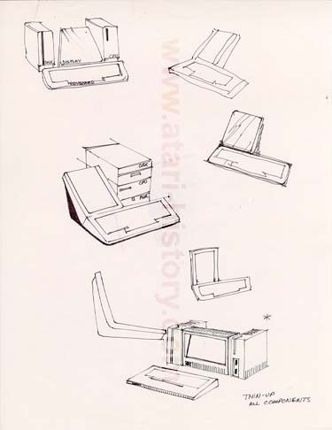

These concept sketches are extremely interesting in their shape and design. They employ the use of a combination keyboard with flat screen LCD display. Using modules to add functionality they would form a complete desktop system. The center image is striking in that the modules next to the combo keyboard/display look similar to a design used several years laterby Sun Microsystems for its IPX line of Sparcstations.